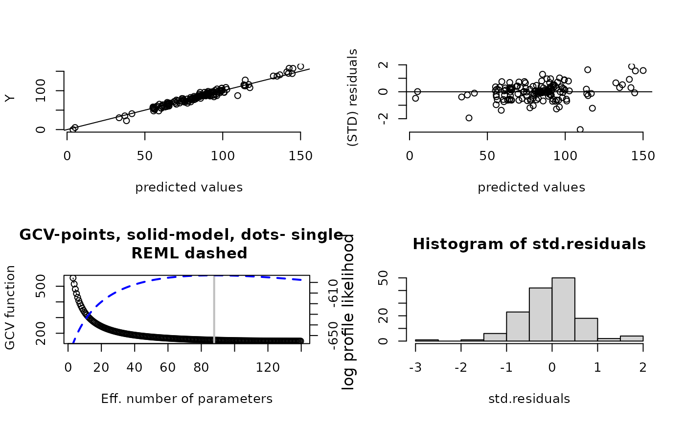
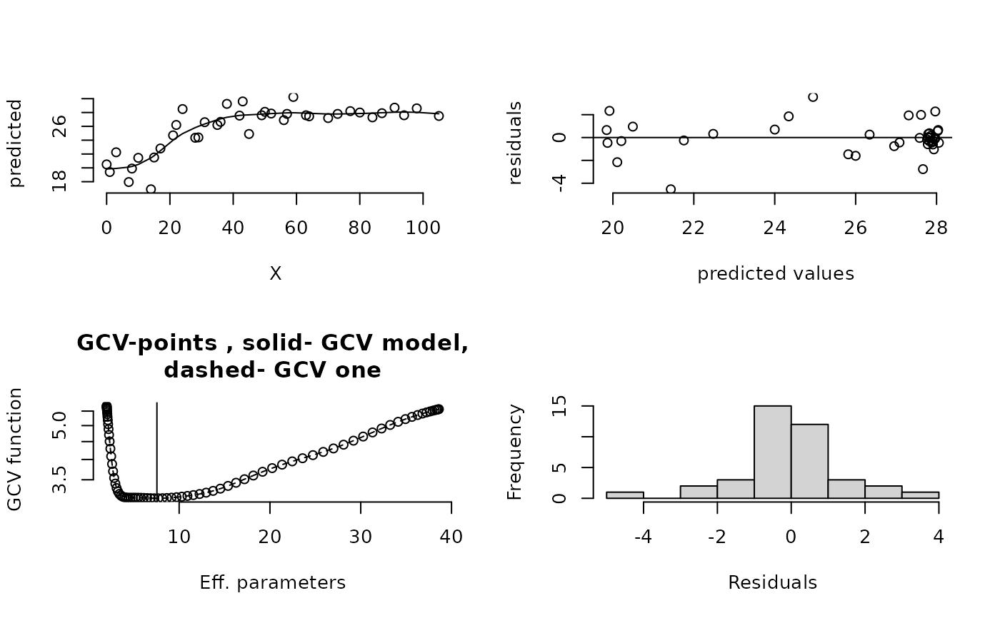

plot.Krig.RdPlots a series of four diagnostic plots that summarize the fit.
A Krig or an sreg object
Number of significant digits for the RMSE label.
A vector specifying by number which of the four plots to draw. 1:4 plots all four.
Optional graphics arguments to pass to each plot.
This function creates four summary plots of the Krig or sreg object. The default is to put these on separate pages. However if the screen is already divided in some other fashion the plots will just be added according to that scheme. This option is useful to compare to compare several different model fits.
The first is a scatterplot of predicted value against observed.
The second plot is "standardized" residuals against predicted value. Here we mean that the residuals are divided by the GCV estimate for tau and multiplied by the square root of any weights that have been specified. In the case of a "correlation model" the residuals are also divided by the marginal standard deviation from this model.
The third plot are the values of the GCV function against the effective degrees of freedom. When there are replicate points several versions of the GCV function may be plotted. GCV function is with respect to the standardized data if a correlation model is specified. A vertical line indicates the minimium found.
For Krig and sreg objects the fourth plot is a histogram of the standardized residuals.
For sreg if multiple lambdas are given plotted are boxplots of the
residuals for each fit.
For spatialProcess object the fourth plot is the profile likelihood for the
aRange parameter. Points are the actual evaluated log likelihoods and the dashed line is
just a spline interpolation to help with visualization.
Krig, spatialProcess, summary.Krig, Tps, set.panel
data( ozone2)
x<- ozone2$lon.lat
y<- ozone2$y[16,]
fit1<-Krig(x,y, aRange=200)
# fitting a surface to ozone
# measurements
set.panel( 2,2)
#> plot window will lay out plots in a 2 by 2 matrix
plot(fit1)

# fit rat data
fit3<-sreg(rat.diet$t,rat.diet$con)
set.panel(2,2)
#> plot window will lay out plots in a 2 by 2 matrix
plot(fit3)

set.panel(1,1) # reset graphics window.
#> plot window will lay out plots in a 1 by 1 matrix